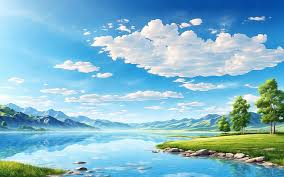

At its core, conservation is the careful management and preservation of natural resources and the environment. It's a proactive approach to ensure that the wonders of our natural world - from vast forests to the tiniest insects - are safeguarded for future generations. Conservation is the act of preserving, guarding, or protecting - in the context of the environment, it means the sustainable use and management of natural resources, including wildlife, water, air, and earth deposits. “We must conserve the forests, not by disuse but by use, making them more valuable at the same time that we use them.” — Theodore Roosevelt Nature conservation isn't just about saving trees or animals; it's about ensuring a sustainable and balanced ecosystem. Every element in nature, be it a roaring river or a buzzing bee, plays a crucial role in the intricate web of life. By conserving nature, we're ensuring that this delicate balance remains undisturbed, allowing life in all its diversity to flourish. In today's rapidly changing world, the meaning of conservation has evolved. It's no longer just about setting aside national parks or protected areas. Modern conservation encompasses a holistic approach, considering socio-economic and cultural factors, and aiming for a harmonious coexistence between humans and nature. People often ask “When is Earth Day?”. Earth Day is celebrated annually on April 22nd and marks a pivotal moment in the modern environmental movement. The day originated in 1970, inspired by the 1969 Santa Barbara oil spill when former Wisconsin senator Gaylord Nelson called for a nationwide environmental teach-in. The first Earth Day brought 20 million Americans together from all walks of life to encourage a sustainable environment. They set the scene for what would later be a major mobilization and environmental awareness of public opinion in the country toward environmental issues. Today, you may ask “What countries celebrate Earth Day?”. Earth Day has become one of the major events on the planet, celebrated as a "global event" by one billion people from hundreds of countries.
Conservation is the act of preserving, guarding, or protecting - in the context of the environment, it means the sustainable use and management of natural resources, including wildlife, water, air, and earth deposits. “We must conserve the forests, not by disuse but by use, making them more valuable at the same time that we use them.” — Theodore Roosevelt Nature conservation isn't just about saving trees or animals; it's about ensuring a sustainable and balanced ecosystem. Every element in nature, be it a roaring river or a buzzing bee, plays a crucial role in the intricate web of life. By conserving nature, we're ensuring that this delicate balance remains undisturbed, allowing life in all its diversity to flourish. In today's rapidly changing world, the meaning of conservation has evolved. It's no longer just about setting aside national parks or protected areas. Modern conservation encompasses a holistic approach, considering socio-economic and cultural factors, and aiming for a harmonious coexistence between humans and nature. People often ask “When is Earth Day?”. Earth Day is celebrated annually on April 22nd and marks a pivotal moment in the modern environmental movement. The day originated in 1970, inspired by the 1969 Santa Barbara oil spill when former Wisconsin senator Gaylord Nelson called for a nationwide environmental teach-in. The first Earth Day brought 20 million Americans together from all walks of life to encourage a sustainable environment. They set the scene for what would later be a major mobilization and environmental awareness of public opinion in the country toward environmental issues. Today, you may ask “What countries celebrate Earth Day?”. Earth Day has become one of the major events on the planet, celebrated as a "global event"